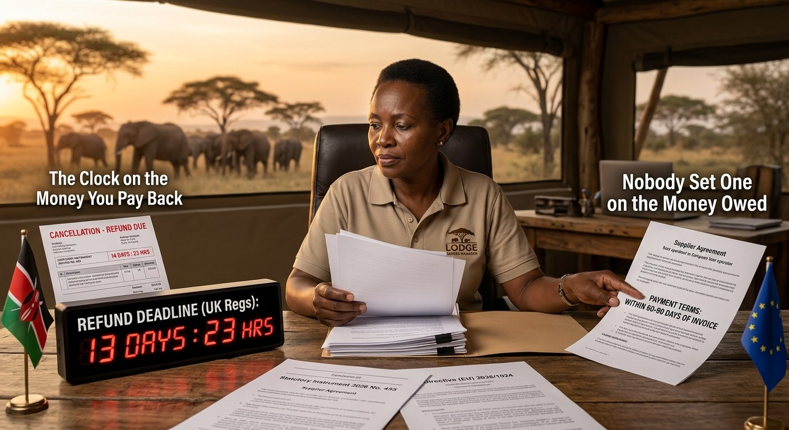

Illustration: AI-generated for EA Hospitality Pulse — synthetic image, not a photograph. Document text is illustrative; the payment terms shown are not a reported figure.
Europe put a clock on the money your lodge pays back. Nobody set one on the money it is owed.
A statutory instrument laid in Westminster and a directive signed in Brussels have both written a refund deadline into the supplier's side of the package holiday contract, 14 days in Britain from April 2027 and seven days under EU law. Neither says a word about when the supplier gets paid in the first place. East Africa is signing the contracts that cross those dates right now.
Statutory Instrument 2026 No. 455 is not a document anyone in Nairobi was waiting for. It runs through the dry business of amending the United Kingdom's Package Travel and Linked Travel Arrangements Regulations 2018, abolishes a category of booking almost nobody could define, repeals five schedules of information requirements, and makes a consequential change to the Government of Wales Act. It does not mention Africa. It does not mention safaris, or camps, or the particular problem of selling a tented room in the Mara to someone in Hamburg eight months before they arrive.
It does, however, contain a new regulation 29A. The government's own guidance states the effect plainly: where a third party fails to perform a service it agreed to provide as part of a package, "the third party must refund the organiser the payments which the organiser has made to the third party within 14 days." A companion provision, regulation 29B, gives organisers what the guidance calls "an express right to seek redress from third parties" where that third party contributed to whatever triggered a payment to the traveller. The amendments commence on 6 April 2027, and the government has confirmed they do not reach contracts entered into before that date.
The third party, in that sentence, is the lodge. It is also the camp, the transfer company, the balloon operator, the domestic airline and the beach hotel on the east coast of Unguja. For the first time in the history of European package travel law, the statutory clock has been pointed at the supplier rather than the seller.
Brussels did the same thing three weeks later and set the clock faster. Directive (EU) 2026/1024, dated 29 April 2026 and in force since 28 May, replaces Article 22(2) of the 2015 Package Travel Directive with wording that gives the supplier a week. In the agreed text, where a travel service is cancelled or not performed, "that service provider refunds to the organiser any payments made by the organiser for that service within seven days." The clock starts "on the day following the cancellation of the service" or on the day the service was due, whichever comes earlier. Member states have 28 months from entry into force to transpose it and a further six before the measures apply, which puts the European deadline somewhere in the first half of 2029. The British one arrives seventeen months from now.
Both reforms were written to solve a problem that was real and was not East Africa's fault. During the pandemic, organisers were obliged to refund travellers within fourteen days while waiting months, sometimes years, to recover the same money from airlines and hotels that had already banked it. The asymmetry nearly destroyed the European tour operating sector. An analysis of the new refund regime published by Travel Weekly, written by Rhys Griffiths, partner and head of travel at Fox Williams, locates the seven-day rule squarely in that experience: the directive is closing a cashflow gap that opened in 2020.
What it is not doing is closing the other one. Neither the British regulation nor the European article says anything at all about when the supplier gets paid in the first place. That remains what it has always been, a matter of contract, negotiated annually between an East African property and a European buyer with considerably more leverage. There is no published aggregate of safari supplier payment terms, and this piece will not invent one. The point does not need a number. Whatever the terms are in any given contract, the statute now fixes the speed at which money leaves the lodge and leaves the speed at which money reaches it exactly where the buyer prefers it.
Eric Drésin, secretary general of ECTAA, the European travel agents' and tour operators' association, welcomed the final text on the day the Council signed it off and then said what the sector was actually thinking. The directive, he said, "does not go far enough in addressing the realities of crisis situations," and on the original ambition of building a framework fit for a crisis of pandemic scale, "that ambition has only been partially delivered." Frank Oostdam, ECTAA's president, had been warmer about the deal when it was struck in December, calling it proof that "constructive dialogue works." Both men were speaking for the organisers. Nobody at that table was speaking for the supplier, because the supplier was not at it.
The scale of East Africa's exposure to that table is in its own statistics. Kenya's Tourism Research Institute recorded 680,373 arrivals from Europe in 2024, 28.1 per cent of a national total of 2,394,376, and reported that 70.6 per cent of European arrivals came on holiday, against 44.2 per cent across all markets. Europeans who come to Kenya come to be on holiday, which is to say they come inside a package. The United Kingdom supplied 180,639 of them, the largest single European market, and Italy 91,842, the largest market inside the EU, ahead of Germany's 87,556.
Zanzibar is the concentrated case. The Office of the Chief Government Statistician's annual report for 2024 put arrivals at 736,755, of which 71.6 per cent came from Europe, with Italy leading on 11.8 per cent, Germany on 9.7, France on 9.4 and Poland on 7.0. Arrivals reached 917,167 in 2025. A beach hotel on that coastline is not peripherally exposed to European package law. It is a European package product that happens to be built in Tanzania.
There is a second clause, and on a long enough view it matters more than the refund clock. The 2015 directive let a traveller walk away from a package without paying a termination fee when unavoidable and extraordinary circumstances occurred at the destination or its immediate vicinity. The agreed 2026 text replaces that with a right that bites "where it can reasonably be expected that the performance of the package travel contract will be significantly affected," and extends the geography to circumstances "occurring at the place of departure or occurring at the place of destination or its immediate vicinity." The event no longer has to have happened. A reasonable expectation that the holiday will be significantly affected is enough, subject to proof. And recital 19 addresses the question every East African marketing director asks first, which is whether a foreign ministry's advisory is the trigger. It is not, and that cuts the wrong way: official statements or recommendations advising against travel to an area are relevant, but their existence "should not be a condition" for establishing unavoidable and extraordinary circumstances. A traveller can invoke the clause without one.
For a destination whose advisory status moves several times a year, and which this autumn watched Washington move Kenya from Level 2 to Level 3 on a health trigger, that is a material widening. It does not create a right against the lodge. The traveller's counterparty is the organiser, and the organiser absorbs the penalty-free cancellation. But organisers do not absorb new risks quietly. They write them into the next supplier agreement, as release windows, as softer deposit terms, as force majeure language that reaches further than it did last year. The directive gives the European buyer a reason to reopen a clause that East African suppliers spent a decade getting tightened.
Which is why the date on the British instrument is the one to put in the diary. The amendments do not apply to contracts entered into before 6 April 2027, which means the rate agreements being signed this season, including the ones negotiated in the halls at ExCeL over the past two days, sit on one side or the other of a legal line depending on when the ink dries. A UK organiser with a competent lawyer knows this. A lodge that has never read regulation 29A does not. Legal advisers to the British trade are already circulating the obvious checklist: get the supplier to acknowledge the 14-day duty in writing, set out the refund mechanics and the authorised contacts, require records that support a cancellation, add expedited dispute steps, and assess the financial strength of key suppliers. Every item on that list is a clause someone will ask an East African property to sign.
The irony is that Britain is the market East Africa has courted hardest and the one whose clause lands first. Rebecca Miano, Kenya's Cabinet Secretary for Tourism and Wildlife, told the trade at World Travel Market last year that "the UK has consistently demonstrated confidence in Kenya as a destination of choice." Allan Njoroge, acting chief executive of the Kenya Tourism Board, described the same event as a platform where "Kenya has been a consistent and strategic participant at WTM London for years." Both statements are true, and neither is a defence. Confidence is a marketing asset. Regulation 29A is a payment obligation, and it will outlast any given year's goodwill.
None of this is a reason for panic, and none of it is imminent. The British clock starts in April 2027 and reaches only new contracts. The European one does not bind anybody until 2029, and will arrive in twenty-seven slightly different national versions, because that is what transposition does. The practical response is unglamorous and cheap. Read the supplier agreement and find out whether it already contains a refund clause, because many do and the statute will simply put teeth in it. Establish which regime each buyer sits in, since a UK organiser and a German one are now governed by different instruments with different clocks. Check whether the force majeure wording in the contract can survive a statutory refund duty, because the lawyers acting for the other side are checking exactly that. And price the working capital honestly, since a property that owes a refund in fourteen days and collects its receivables on terms it did not set has a financing cost whether or not it has ever called it one.
What was decided in Westminster and Brussels this year was not really about consumer protection, whatever the press releases said. Michael Damianos, Cyprus's minister of energy, commerce and industry, put the official case when the Council gave its final sign-off in March: "The success of our travel industry depends on travellers' trust." Alex Agius Saliba, the Maltese socialist who steered the file through Parliament on a vote of 537 to 2, said the updated rules "will protect consumers when something goes wrong with their package holiday." Both are fair descriptions of the intent. The mechanism, though, is a reallocation of who holds the money during the weeks when nobody is travelling and everybody wants a refund. Europe has decided that should not be the organiser. It has not decided who it should be. The contracts being signed this month will.
📣 Telegram 💬 WhatsApp 💼 LinkedIn 📚 All guides